Chapter 11. Graph(그래프)¶
0절. 개요
1절. 너비 우선 탐색
2절. 깊이 우선 탐색
3절. 최소 신장 트리
4절. 최단 경로
0절. 개요¶
그래프(Graph)¶
- 현상이나 사물을 정점과 간선으로 표현
- \(Graph\) \(G\) = \((V,E)\)
- \(V\) : vertex set
- \(E\) : edge set
- 정점(Vertex) : 대상 or 개체
- 간선(Edge) : 정점 간 관계
- 인접(Adjacent) : 두 정점이 간선으로 연결된 경우
인접 행렬(Adjacent Matrix)¶
- 정점(Vertex의 총 수 : N)
- N ⅹ N 행렬 표현
- 원소 (i, j) = 1 : 정점 i와 정점 j 사이 간선 존재
- 원소 (i, j) = 0 : 정점 i와 정점 j 사이 간선 미존재
- 유향 그래프
- 원소 (i, j) : 정점 i로부터 정점 j로 연결되는 간선이 있는가?
- 가중치 그래프
- 원소 (i, j) : 1 대신 가중치
예시¶
- 친분 관계 그래프
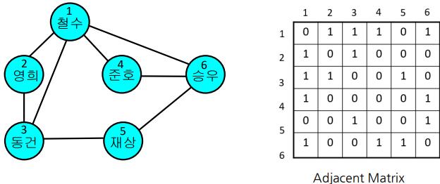
- 친분 관계 그래프 + 가중치
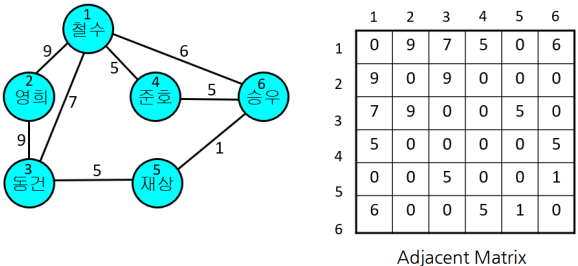
- 친분 관계 그래프 + 방향
- 유향 그래프(Directed Graph)
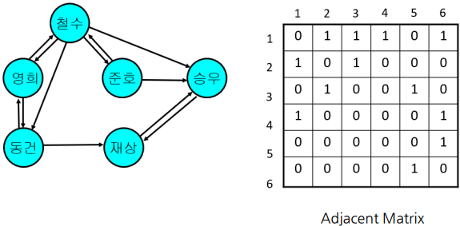
- 친분 관계 그래프 + 가중치 + 방향
- 유향 그래프(Directed Graph)
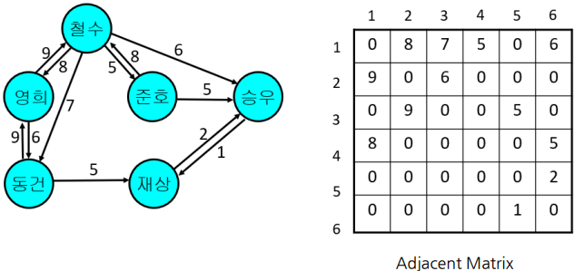
인접 리스트(Adjacent List)¶
- N개의 연결 리스트 표현
- i번째 리스트 : 정점 i에 인접한 정점들을 리스트로 연결
- 가중치 그래프
- 리스트에 가중치도 보관
예시¶
- 친분 관계 그래프
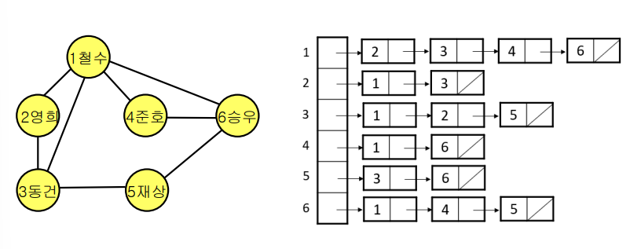
- 친분 관계 그래프 + 가중치
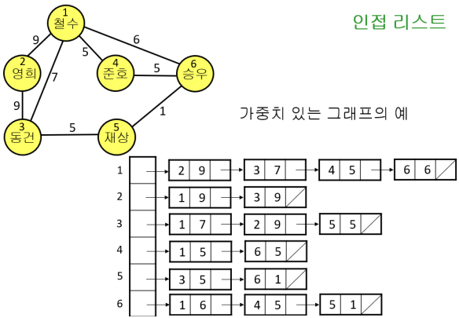
너비 우선 탐색과 깊이 우선 탐색¶
- 그래프에서 모든 정점을 방문하는 가장 기본적인 탐색 알고리즘
- 시간 복잡도(Time Complexity)
- O(V + E)
| 탐색 종류 | 영문 약어 | 영문 |
|---|---|---|
| 너비 우선 탐색 | BFS | Breadth First Search |
| 깊이 우선 탐색 | DFS | Depth First Search |
1절. 너비 우선 탐색¶
너비 우선 탐색(BFS : Breadth First Search)¶
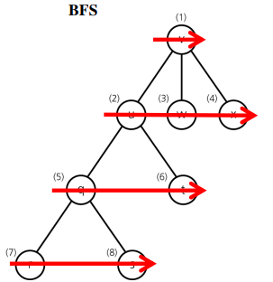
- Breadth = broad / wide
- 자료구조
- 큐(queue : FIFO)
- 수행 시간
- \(θ(|V| + |E|)\)
너비 우선 탐색 과정¶
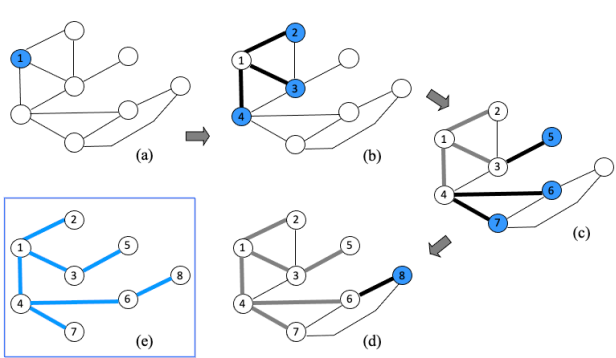
- 값 출력 순서
- 1, 2, 3, 4, 5, 6, 7, 8
너비 우선 탐색 알고리즘¶
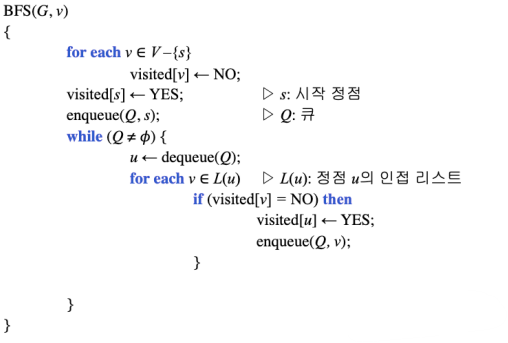
2절. 깊이 우선 탐색¶
깊이 우선 탐색(DFS : Depth First Search)¶
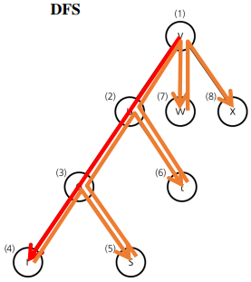
- Depth = vertical before horizontal
- 자료구조
- Stack(FILO)
- 수행 시간
- \(θ(|V| + |E|)\)
깊이 우선 탐색 과정¶
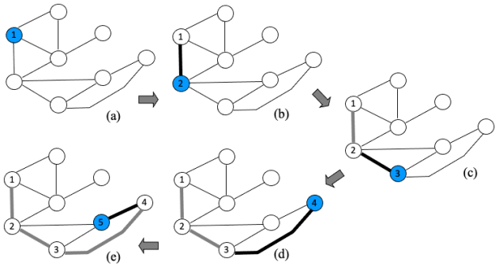
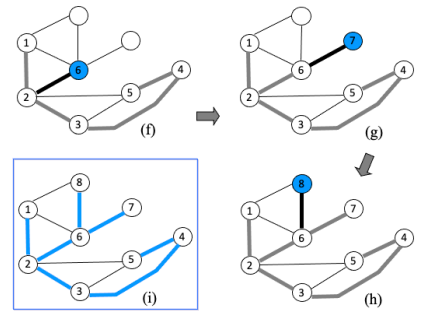
- 값 출력 순서
- 5, 4, 3, 2, 7, 6, 8, 1
3절. 최소 신장 트리¶
최소 신장 트리(MST : Minimum Spanning Tree)¶
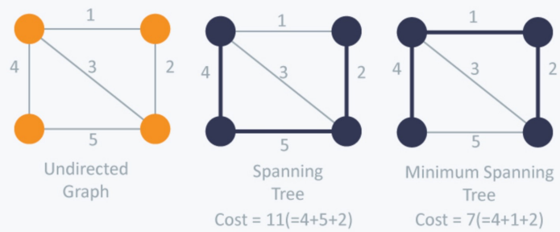
- 간선 가중치의 합이 가장 작은 트리
트리(Tree)¶
- 싸이클이 없는 연결 그래프
- N 개의 정점을 가지는 트리가 N - 1개의 간선 보유
신장 트리(Spanning Tree)¶
- 그래프 G(V, E)에서 정점 집합 V를 그대로 두고 간선을 |V| - 1개만 남겨 트리 생성(|V| = N)
- ex) 너비 우선 트리, 깊이 우선 트리
Prim's Algorithm¶
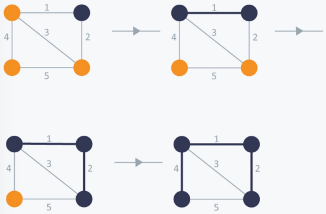
- 그리디 알고리즘의 일종
- 최소 신장 트리(MST) 문제에서는 항상 최적해 보장
- 수행 시간
- 최소 가중치 탐색 시 힙(Heap) 사용
- \(O(|E|log|V|)\)
Prim 알고리즘 구조¶
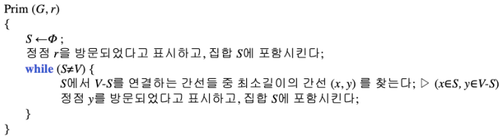
Kruskal's Algorithm¶
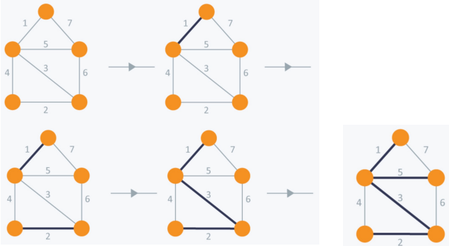
- 그리디 알고리즘의 일종
- 최소 신장 트리(MST) 문제에서는 항상 최적해 보장
- 수행 시간
- \(O(|E|log|V|)\)
Kruskal 알고리즘 구조¶
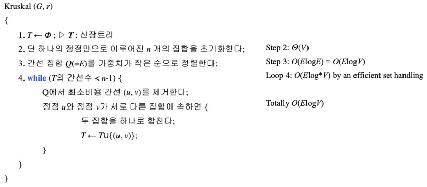
Kruskal 알고리즘 예시¶
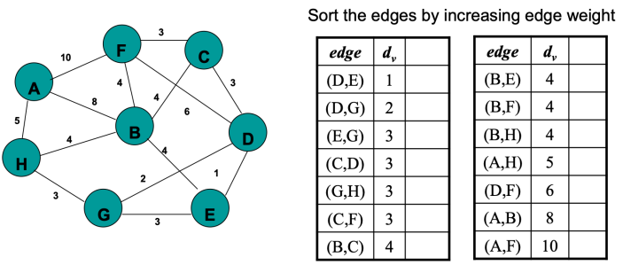
- 정답
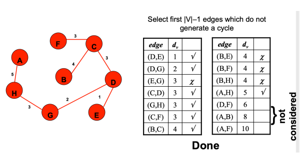
4절. 최단 경로¶
최단 경로¶
- 단일 시작점으로부터 각 정점에 이르는 최단 경로
- 그래프 G(V, E) 시작 노드 s에서 목적지 d의 연결 비용 합이 최소인 가중치 집합 C 계산
최단 경로 조건¶
- 간선 가중치가 있는 유향 그래프
- 무향 그래프의 경우
- 각 간선에 대해 양쪽으로 유향 간선이 있는 유향 그래프로 간주
- 즉, 무향 간선(u, v)는 유향 간선 (u, v)와 (v, u)를 의미
두 정점 사이 최단 경로¶
- 두 정점 사이 경로들 중 간선 가중치 합이 최소인 경로
- 간선 가중치의 합이 음인 싸이클이 존재하면 문제 정의 X
최단 경로 종류¶
| 종류 | 영문 | 설명 |
|---|---|---|
| 다익스트라 알고리즘 | Dijkstra's Algorithm | 한 정점에서 다른 모든 정점까지의 최단 경로 음의 가중치를 허용하지 않는 최단 경로 |
| 벨만포드 알고리즘 | Bellman-Ford's Algorithm | 한 정점에서 다른 모든 정점까지의 최단 경로 음의 가중치를 허용하는 최단 경로 |
| 플로이드-워샬 알고리즘 | Floyd-Warshall Algorithm | 모든 정점에서 다른 모든 정점까지, 음의 가중치를 가진 최단 경로 싸이클이 없는 그래프의 최단 경로 |
다익스트라 알고리즘(Dijkstra's Algorithm)¶
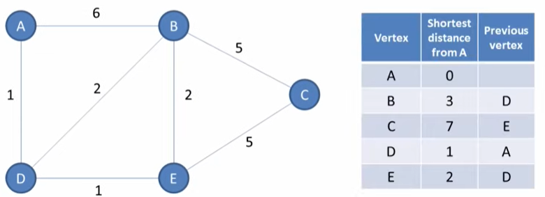
- 모든 간선 가중치는 양수
- 수행 시간
- 힙 이용
- \(O(|E|log|V|)\)
다익스트라 알고리즘 구조¶
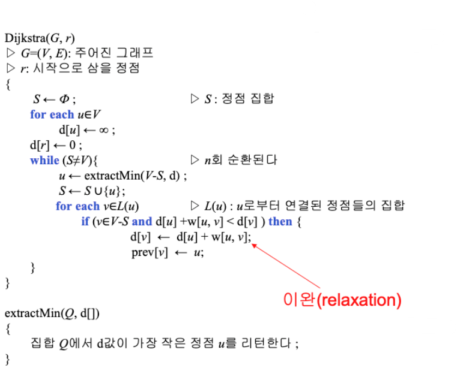
다익스트라 알고리즘 과정¶
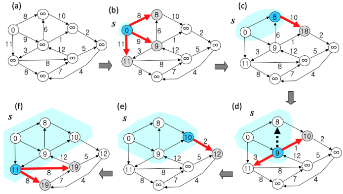
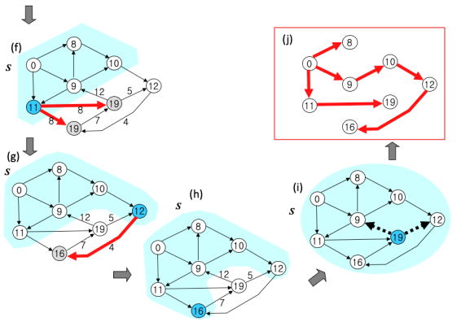
잘못된 다익스트라 알고리즘 : 음수 가중치¶
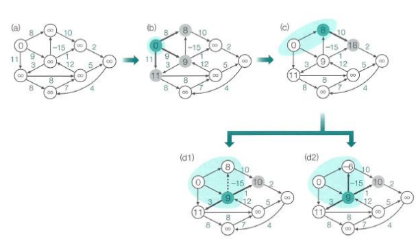
벨만포드 알고리즘(Bellman Ford's Algorithm)¶
- \(d_t^k\) : 중간에 최대 k개 간선을 거쳐 정점 r로부터 정점 t에 이르는 최단 거리
- 목표 : \(d_t^{n-1}\)
- 수행 시간
- \(θ(|E||V|)\)
- 재귀적 관계
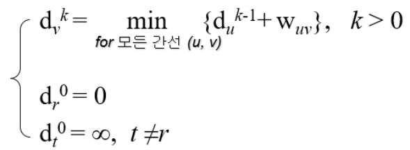
벨만포드 알고리즘 구조¶
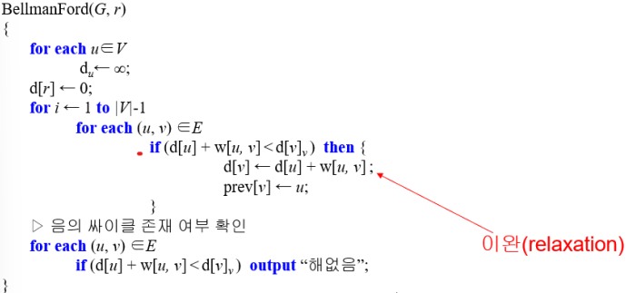
벨만포드 알고리즘 과정¶
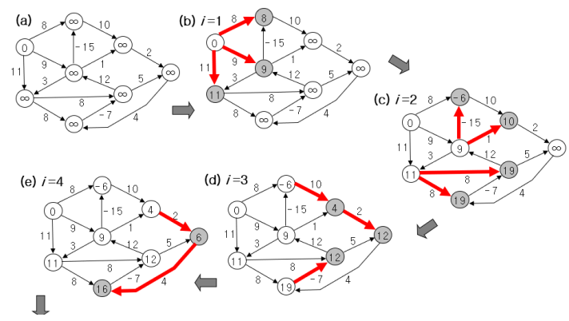
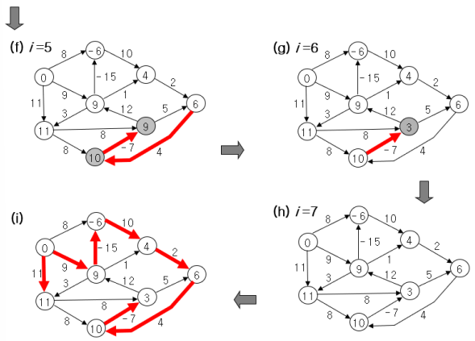
플로이드-워샬 알고리즘(Floyd-Warshall Algorithm)¶
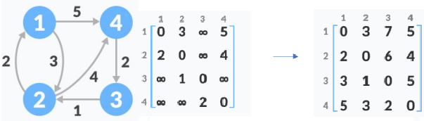
- 모든 정점 간 상호 최단거리 계산
- 음의 가중치 허용
- 수행 시간
- \(θ(|V|^3)\)
- 문제의 총 수 : \(θ(|V|^3)\), 각 문제 계산 : \(θ(1)\)
플로이드-워샬 알고리즘 구조¶
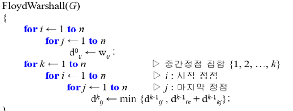
플로이드-워샬 알고리즘 과정¶
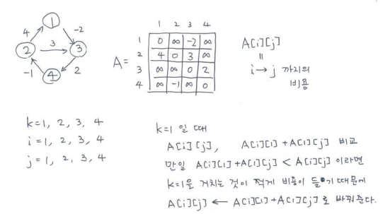
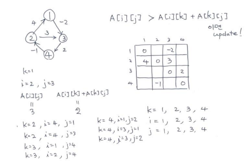
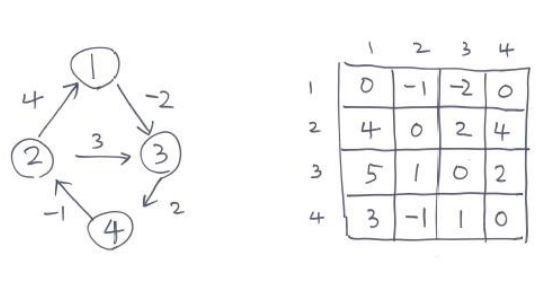